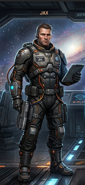
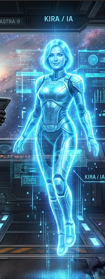
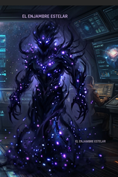

El Último Faro Cósmico
Bienvenido al Centro de Control de la Estación Astra-9.

Comenzar Misión
Bienvenido al Centro de Control de la Estación Astra-9.
Conoce a los protagonistas y amenazas de esta aventura espacial:

Comandante y Piloto de la nave Astra. Experto en astrofísica.

Inteligencia Artificial de la estación encargada de los sistemas cuánticos.

Entidad antagonista que interfiere la energía y bloquea las señales.
El núcleo de fusión de la estación ha entrado en sobrecarga debido a una interferencia del Enjambre Estelar. La red galáctica colapsó y depende de ti restablecer el orden.
Haz clic en el botón de abajo para enviar el código de seguridad y reactivar el faro:
Jax y KIRA logran alinear los espejos cuánticos. El haz de luz galáctico vuelve a brillar, guiando a las naves perdidas a casa.
Volver al inicio